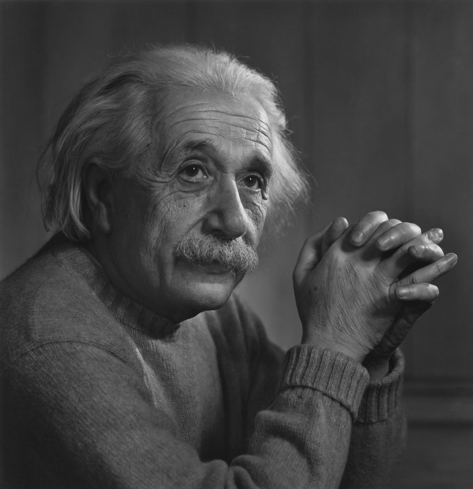
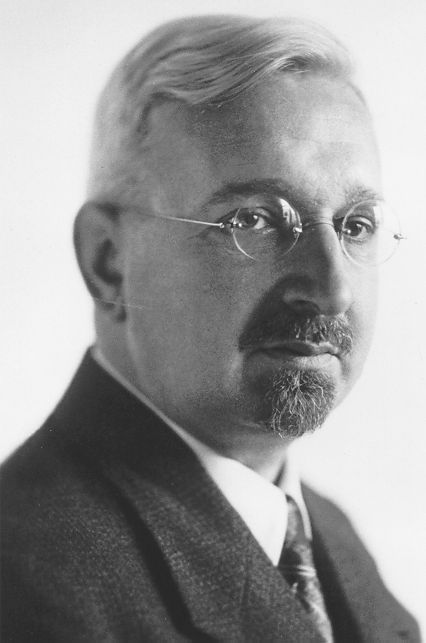
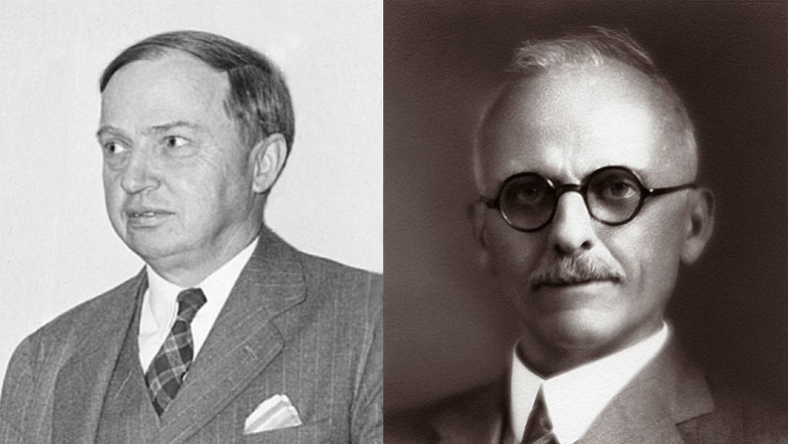
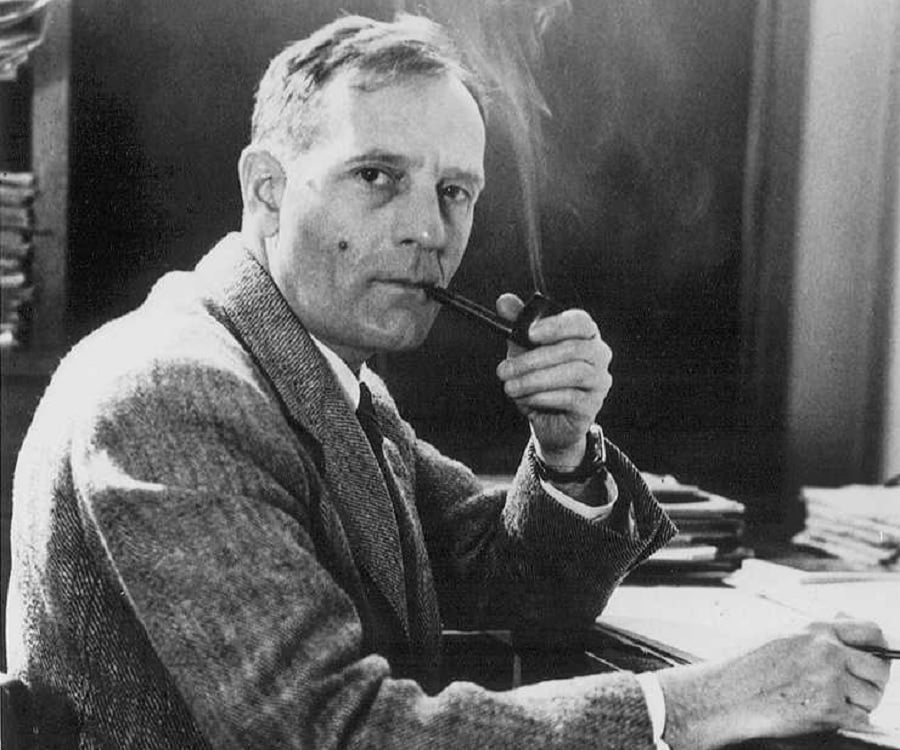
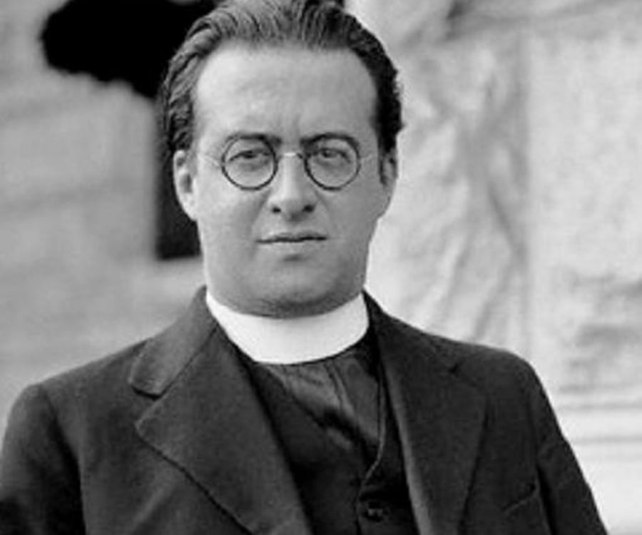
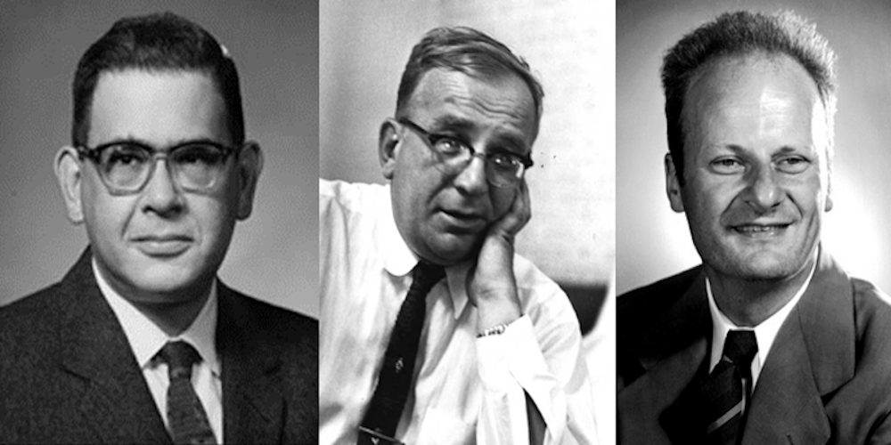
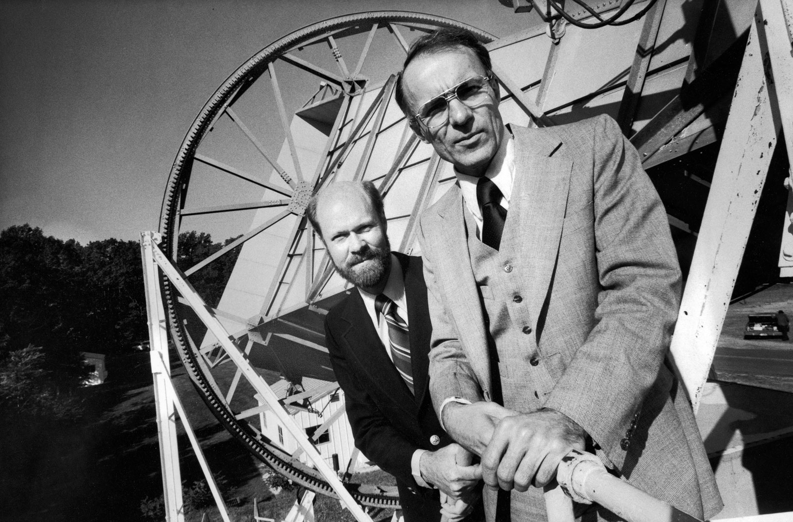
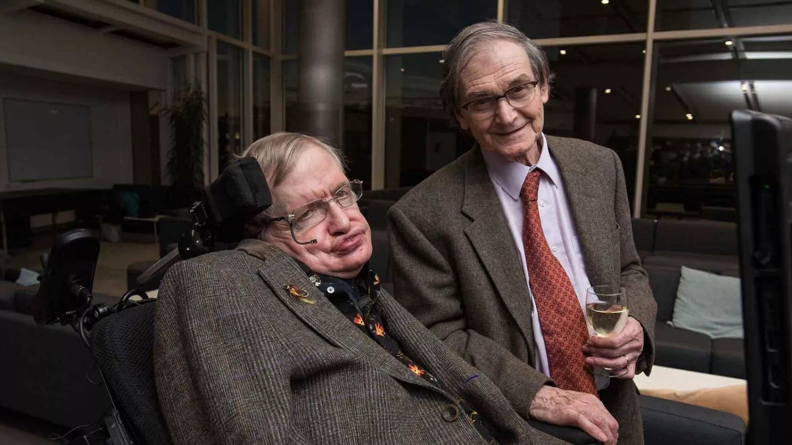
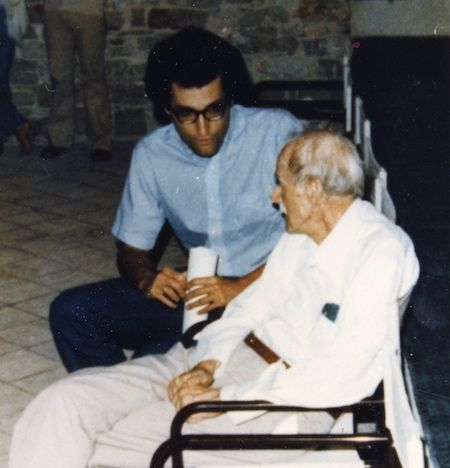
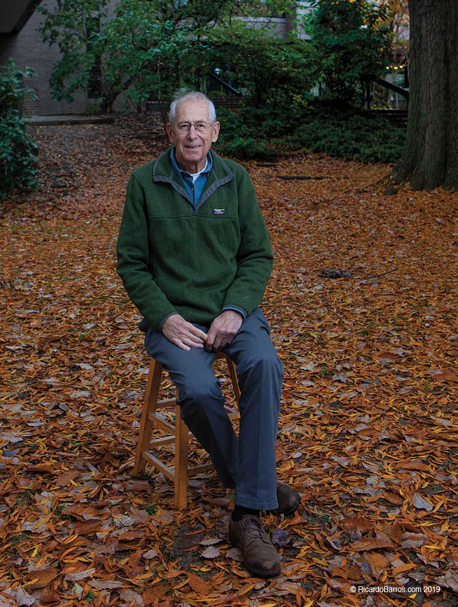

A little bit of History
This section contains a little bit of history, to understand how the field of cosmology has developed during the last 100 years and how it met string theory to give rise to string cosmology.
Our story begins with Einstein's publication on The Foundation of the General Theory of Relativity in 1916. These developments provided a solid framework for studying gravity from a new point of view. Not as a force, as the Newtonian paradigm proposed, but as a result of the curvature of spacetime, bent by the presence of massive objects and energy. This powerful machinery seemed to be the correct one to describe the large-scale behaviour of the cosmos. In fact, it was Albert himself who started this task.
At that time, it was not clear how big the cosmos was. Some people claimed that it was just our Milky Way galaxy, while others said that it was bigger, a place where many other objects like our galaxy could fit in. This did not change the fact that early observations, dressed up with some beliefs, pointed to a static universe that avoided gravitational collapse, as predicted by the principle of relativity. This was noticed by Albert and, biased towards the idea of such an "eternal" universe, he introduced a constant into his equation, Λ. This cosmological constant could act as a counterbalance to the aforementioned gravitational collapse, pushing the cosmos "out" in the right way to keep it static. Eternal. Beautiful.
But Einstein was not the only one who was having a good time with general relativity. By 1919, a German mathematician, Theodor Kaluza, shared with Einstein a novel idea of his; what if we tried to describe Maxwell's Electromagnetic theory and General Relativity using the same formalism? The proposal, which was later published in 1921, seemed to work but at an interesting cost: An extra dimension was needed to acommodate Maxwell's and Einstein's equations into the same framework... This was of little interest to Sir Arthur Stanley Eddington, who was interested in photography. He wanted to take some good shots of the eclipse that took place 29th May that same year. Of course, his intention was not to post them on Instagram, but to find evidence that Einstein's theory worked. In a series of papers written by the Dutch gentleman Willem de Sitter, it was shown that according to general relativity, that any massive body would deform the geometry of spacetime, creating a gravitational lens that forces light rays to "bend" as they pass close to the heavy object causing the deformation. This led Arthur to initiate the expedition, taking pictures where the light rays of stars, easily visible in the darkness of the eclipse, were bent as predicted by Einstein's theory. First goal of the game for Einstein.
It was 1920 and Einstein's theory was still the talk of the town and people carried on using the framework to unravel the mysteries of the cosmos. Do you remember that people were not quite sure how big the cosmos was? Well, this confrontation had its climax during the debate held on 26th April 1920 at the Smithsonian Museum of Natural History, Washington. In one corner of the ring, Harlow Sharpley. Opposite him, Heber Curtis. While the former defended that only the Milky Way was the whole of the universe, the latter argued that some observed nebulae were in fact separate galaxies located far beyond the Milky Way. Sharpley's argument relied heavily on his observations of the distribution of stars within the Milky Way. On the other hand, Curtis defended that the luminosity measures of novae suggested that those bright spots were too distant to be part of our galaxy. However, sufficient evidence could not be produced, so the debate ended in a draw, awaiting observational signatures that could prove one hypothesis or the other.
Although Curtis' view of the universe was gigantic, there were people who wanted to make it even bigger. This was the case of the Soviet physicist Alexander Friedmann, who introduced the idea of an expanding universe with generalised geometries (open, flat and closed) in 1922. The main motivation for this project was that the static solution proposed by Einstein seemed unstable; the slightest disturbance would cause the universe collapse or expand. However, Einstein did not like this idea and insteaad worked on revising his equations to support the static, eternal universe.
Do you remember the great debate introduced above? Well, the verdict had to wait until 1924, when Edwin Hubble identified Cepheid variables in several nebulae. Cepheid stars are considered to be a standard candle discovered by Henrietta Leavitt. The distance to these objects can be determined by comparing their apparent luminosity with their intrinsic luminosity. His observations proved conclusively that these nebulae containing Cepheid variables were too distant to be part of the Milky Way. Thus, they were entire galaxies outside our own. Winner of the battle: Curtis.
The second half of the twenties became quite exciting regarding our understanding of the largest and smallest scales in the universe. For a start, a Swedish theoretical physicist called Oskar Klein proposed a quantised version of Kaluza's five-dimensional formalism. Motivated by the recent developments in quantum mechanics by Heisenberg, Schrödinger, Dirac et al., Klein introduced the hypothesis that the fifth dimension was rolled up and microscopic. He suggested that the geometry of the extra fifth dimension could take the form of a circle, with a radius as big as 10^(-30) cm. This proposal laid the foundations for one of the main features of compactifications in string theory: Any extra inaccesible dimension must be small and rolled in itself.
The visible dimensions (the three spatial ones plus time) were the main concern of Georges Lemaître, a Belgian priest and physicist, who in 1927 proposed a model of an expanding universe, similar to that of Friedmann. When Lemaître met Einstein at a conference in the same year, they discussed his latest proposal of the former. Einstein told him that Friedmann had suggested something similar five years earlier, but he was still sceptical about this idea. It is believed that Einstein shared the following thoughts with Lemaître: "Vos calculs sont corrects, mais votre physique est abominable". (Your calculations are correct, but your physic is abominable) Good old Albert had to retract these words two years later, when Hubble showed that the absorption spectra of most of the galaxies were redshifted. According to the Doppler effect, this meant that they were "moving away" from us! Friedmann was right! It was at this point that Einstein remarked that introducing the constant term to keep the universe in a static state was his biggest blunder. In the following papers of his cosmological research, he discarded this term, claiming that it was "theoretically unsatisfactory in any case".
However, there was a problem with Hubble's discovery. The physics community did not want to accept that galaxies were moving away from us, as it would mean that our galaxy sits at a very special place in the universe, kinda like the centre of it. This idea was disproved by Lemaître, who managed to show that galaxies are not moving away from us, but that the fabric of spacetime itself is expanding! Galaxies remain static at a point in space, while this stretches in all directions. These and other results were collected in several papers between 1927 and 1933 , when Lemaître published a final summary with a new controversial idea. In this paper, he proposed that if one extrapolated this cosmic expansion backwards in time, the universe would shrink and shrink with less and less matter, describing an increasingly concentrated cosmos preceded by a singularity in which the classical concepts of space and time lose their meaning. Lemaître called this special state the Primeval Atom, a state with initial density and temperature that is well beyond humanity's ability to replicate, where the laws of quantum mechanics would apply. The physics community received this proposal with concern, as they thought that Lemaître's idea was biased by his religious beliefs and had been manipulated to find evidence for a Godly Creation.
As we all know, the late thirties and early fourties were awful years for the whole world, but science did not sleep. Especially with the progress in nuclear physics thanks to Oppenheimer, Fermi, Bethe et al. to develop something that had to do with a little boy and a fat man. In any case, it was not until 1948 that cosmology returned to the forefront of research. Ralph Alpher, Hans Bethe and George Gamow published on April 1st a paper in which they showed that if Lemaître's primeval atom was the right way to go, then all the light elements (i.e. hydrogen, helium and lithium) decorating the universe should have been created during the rapid expansion of the primeval atom state. This process of element creation is known as nucleosynthesis. They also predicted the existence of a remnant glow of radiation from this initial hot state that would permeate the entire universe.However, similarly to what happened with Lemaître's work, this proposal was also ridiculed, partly because of the playfulness of the author's names, and partly because of the lack of detailed mathematical descriptions. The English astronomer Fred Hoyle, a firm defender of the steady state of the universe, pejoratively referred to this proposal as the "Big Bang theory" during a BBC radio broadcast in 1949. The reader is probably familiar with this name...
The decade of the fifties brought no major breakthrough regarding cosmology but in the development of quantum mechanics applied to classical fields. Some of the knowledge gained in nuclear physics during the previous decade paid off in this decade, when Richard Feynmann, Julian Schwinger, Freeman Dyson and Shinichiro Tomonaga managed to win the "war against infinities" by developing the method of renormalisation. In addition, Feynmann introduced the path integral formulation and his famous diagrams, a visual tool to intuitively organise and to help calculate terms in the aforementioned perturbative expansion. All these improvements led to Quantum Field Theory (QFT) as a complete theoretical framework.
Although this great progress continue shinning with the theoretical development of the Standard Model of particle physics during the decades of the sixties and seventies, it was until 1964 that Lemaître and the α-β-γ gentlemen got their redemption. By that year, Robert Wilson and Arno Penzias were conducting some tests and experiments with the Holmdel Horn Antenna at Bell Labs in Holmdel Township, New Jersey. They discovered a source of noise in the atmosphere that they could not explain. First they thought it was a radio signal coming from New York city. Other possibilities for the source of the noise were some after-effects of an atomic bomb test that had been conducted over the Pacific several years earlier. Or even worse; pidgeon droppings. After a whole year of back and forth testing, the scientists concluded that they had detected the cosmic background radiation (CMB), the remnant glow of radiation emitted by the universe in the early times after the Big Bang, as predicted by the α-β-γ-gentlemen. This confirmed their proposal for nucleosynthesis. And by extension, our favourite Belgian priest was proved right. The universe had started in a very hot and dense state. Verys soon after it had started expanding, and cooling down, light elements had been created.
Similarly, in the seventies, Stephen Hawking and Roger Penrose managed to show that from the perspective of general relativity, a singularity in the early universe was inevitable, providing further mathematical evidence for the Big Bang theory. The clues were clear: a quantum formal approach to cosmology was needed, as the early universe had been in a state where general relativity breaks down and quantum effects become important. In principle, one can try to quantise general relativity by following the formalism of quantum mechanics and applying the path integral perturbation developed by Feynmann in the fifties. However, this would start a new war of infinities that could never be won. The number of counter-terms would be infinite, introducing too many variables into the game and losing control of the theory. This did not stop Hartle, Hawking and Vilenkin, among others, from trying a semi-quantum approach to cosmology, where the state of the universe is described by its wave function. However, they soon realised that one needs to specify a good choice of boundary conditions for the universe to determine which solution, coming from a Schrödinger-like equation, describes the state that we observe. But how can one choose the right boundary conditions without leaving the system to be described?
Albeit the boundary condition problem left quantum cosmologists in a everlasting discussion about the right interpretation, all hope was not lost. In the early seventies, in an attempt to describe some of the fundamental interactions of constituents in the atomic nucleus, Yoichiro Nambu, Holger Nielsen, and Leonard Susskind presented a new physical interpretation of these interactions. In this approach, inspired by the work of Gabriel Veneziano, the nuclear forces could be described as vibrating, one-dimensional strings. However, this string description of the strong force made many predictions that were in direct contradiction to experimental results, making this proposal irrelevant ... until 1974. That year, John Schwarz, Joël Scherk and Taimiki Yonega found that one of the vibrational modes of these close one-dimensional strings could have properties exactly matching those of the graviton, the hypothetical messenger particle of the gravitational force. Could this new theory be the way to make quantum gravity a reality?
This discovery became the starting point for the two main revolutions in string theory that took place in the eighties and nineties. During these two decades, theoretical physicists made progress in unraveling the mysteries of this promising theory, capable of describing not only quantum gravity, but also all elementary particles (in the form of different vibrational modes of the strings) and all the interactions between them. A theory to explain general relativity and the standard model of particle physics using the same formalism. The price to pay was six times greater than Kaluza-Klein's work; A total of ten dimensions were needed for the theory to make sense. This was of little concern to Philip Candelas, Gary Horowitz, Andrew Strominger and Edward Witten, who inspired by the seminal work of Kaluza and Klein in the twenties, showed that the six small extra dimensions need to be compactified on a Calabi-Yau manifold .
Among all the lines of string theory research that appeared during these two decades, there was one called string cosmology. The main goal of this line is to reproduce the observed four-dimensional cosmological features from the higher-dimensional framework provided by string theory. The idea was simple: take the higher-dimensional theory and hide some extra dimensions by compactifying them on a Calabi-Yau manifold. The resulting four-dimensional theory would have a vacuum energy associated with the cosmological constant that Einstein introduced into his equations. However, this was not a major problem, as the general consensus and observations since the thirties pointed to an expanding cosmology and not a static universe. So this value had to be zero, right?
This changed abruptly at the end of the Millenium. Two independent projects studying supernovae found that the redshift of these explosions did not match the expansion rate detected by Hubble . In fact, all the data pointed to an accelerated expansion rate. In other words; the confirmed expansion of the universe, once proposed by Lemaître, was getting faster and faster every day! From a theoretical point of view, it was time to dust off Einstein's cosmological constant Λ. An accelerated expansion of the universe could be explained by a positive and really small value of the cosmological constant Λ. This would be equivalent to a vacuum energy with a positive value. As the nature of this energy was completely unknown, it could not be detected but only inferred from the observation of the expansion, it was called "dark energy". The rules of the string cosmology game had changed after this discovery. The vacuum energy was no longer trivial, but small, really small and positive. In this way, one could provide an explanation on the dynamics of the universe from a microscopic point view, i.e. that of a theory of quantum gravity. This major change drew the attention of a large part of the theoretical physics community to achieve something that seemed naively simple; to obtain dark energy from string theory.
It is 2024 and we are still looking for a single model capable of reproducing dark energy from string theory. What could have gone wrong?